Japan / Hokkaido / Noboribetsu
Noboribetsu
Noboribetsu · Hokkaido
Noboribetsu
Highlighted on the Hokkaido map.
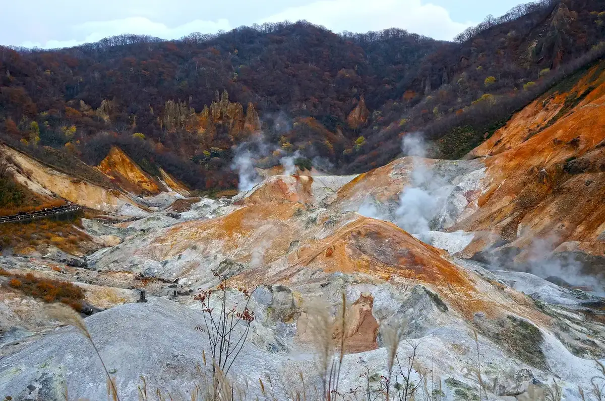
Stay
登別ゲストハウス 赤と青
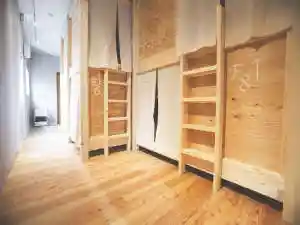
Noboribetsu Gesutohausu Aka To Ao
花鐘亭はなや
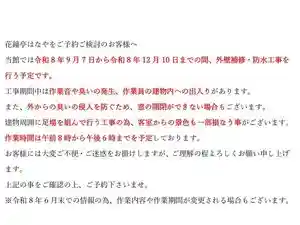
Hana Kane Tei Hanaya
登別温泉 登別グランドホテル
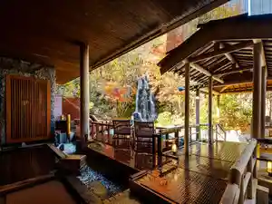
Noboribetsu Onsen Noboribetsu Gurandohoteru
登別万世閣
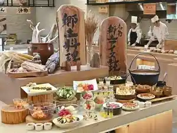
Noboribetsu Bansei Kaku
ホテルゆもと登別
Hoteru Yumoto Noboribetsu
ホテルまほろば
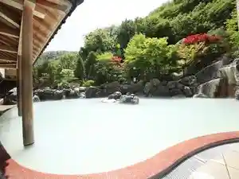
Hoteru Mahoroba
登別温泉郷 滝乃家
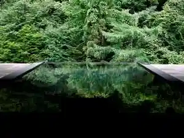
Noboribetsu Onsen Sato Takino Ie
滝乃家別館玉乃湯
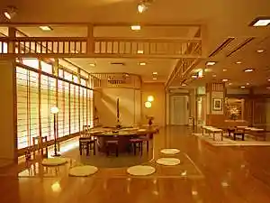
Takino Iebetsu Kan Tamano Yu
名湯の宿パークホテル雅亭
Meitou No Yado Paakuhoteru Masa Tei
旅亭花ゆら
Tabi Tei Hanayu Ra
ａｄｅｘ ｉｎｎ
A D E X I N N
第一滝本館
Daiichi Takimoto Kan
Dining
いろはにほへと 幌別店

Irohanihoheto Horobetsu Mise
こいぶみ寿し
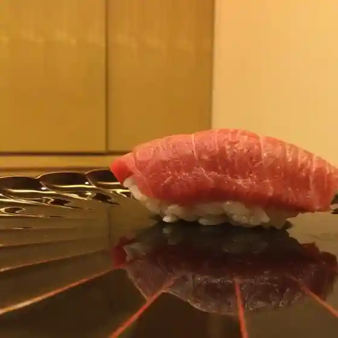
Koibumi Hisashi Shi
いでゆそば
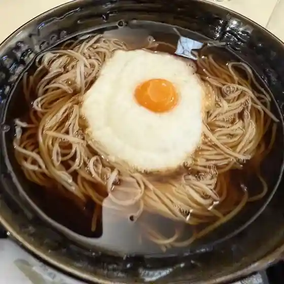
Ideyusoba
家庭料理わかくさ
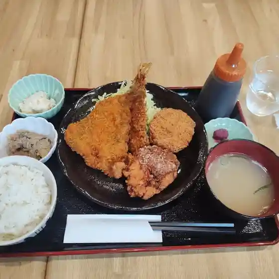
Kateiryouri Wakakusa
いやさか
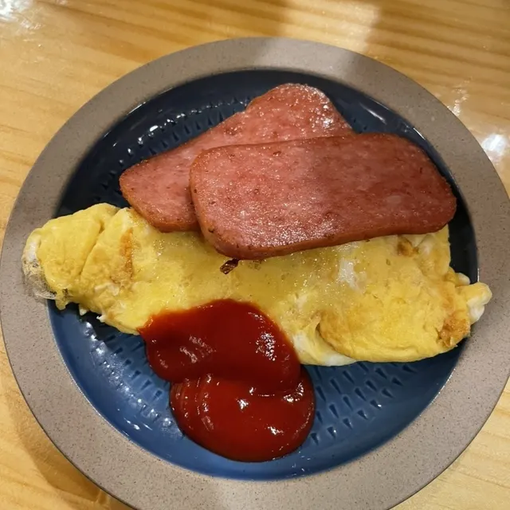
Iyasaka
望楼NOGUCHI登別
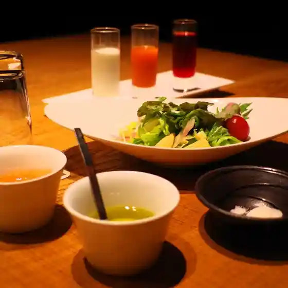
Bourou Noguchi Noboribetsu
ゆのまちカフェ 六花
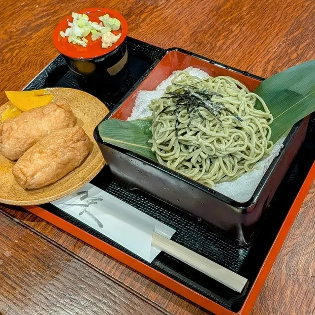
Yunomachi Kafe Rikka
地域食堂 ゆめみ～る
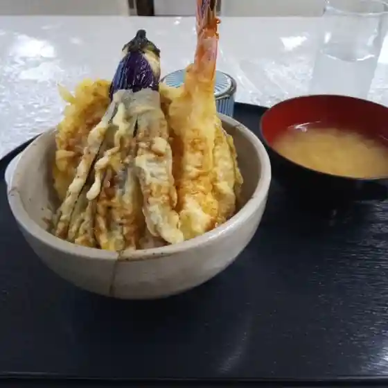
Chiiki Shokudou Yumemi ~ Ru
CUBERU Green&Coffee
Cuberu Green&Coffee
ダイニングキッチン 哲
Dainingukitchin Satoshi
山静館
Yama Sei Kan
カナディアンフライドチキン
Kanadianfuraidochikin
三星 登別若草店
Mitsuboshi Noboribetsu Wakakusa Mise
居酒屋いつもの処
Izakaya Itsumono Tokoro
食事・喫茶 田園
Shokuji Kissa Den'En
龍鳳茶屋
Ryuuhou Chaya
北海道ミルク倉庫
Hokkaidou Miruku Souko
郷の味 しらかば
Sato No Aji Shirakaba
加門 居酒屋
Ka Mon Izakaya
きむら珈琲苑
Kimura Koohii En
登別 石水亭
Noboribetsu Ishi Mizu Tei
ラウンジ KOMOREBI
Raunji Komorebi
ほっともっと 登別若草店
Hottomotto Noboribetsu Wakakusa Mise
マックスバリュ 登別店
Makkusubaryu Noboribetsu Mise